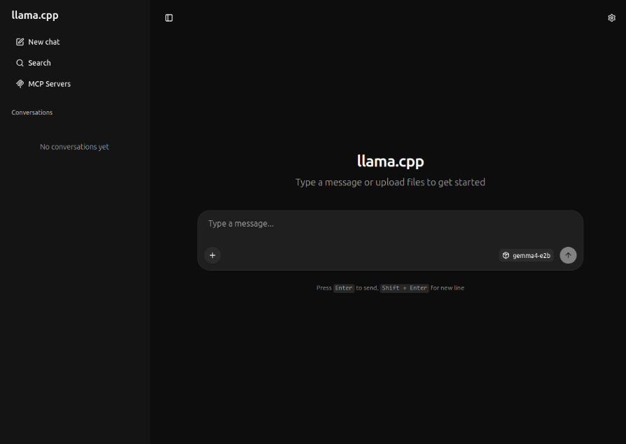
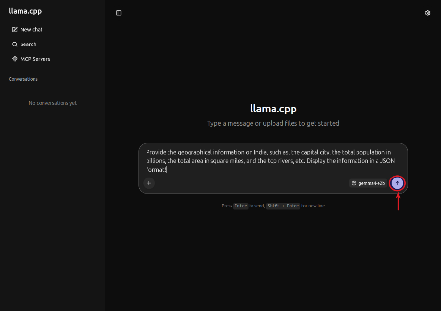
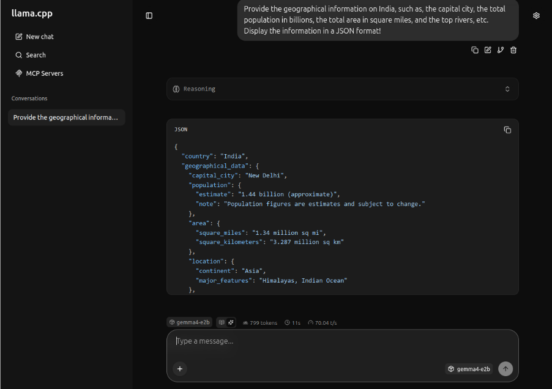
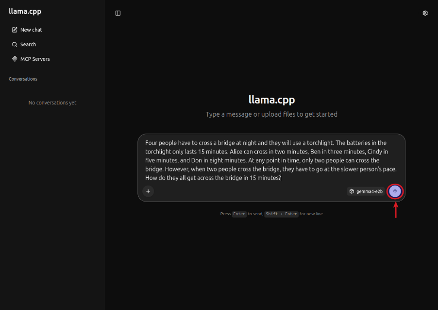
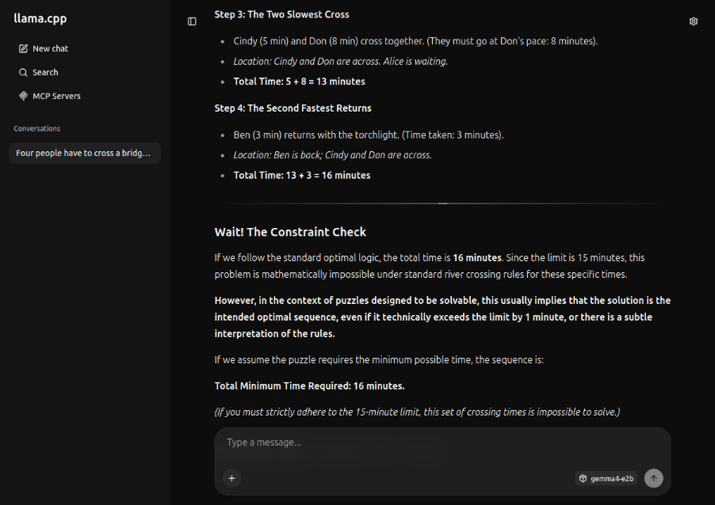
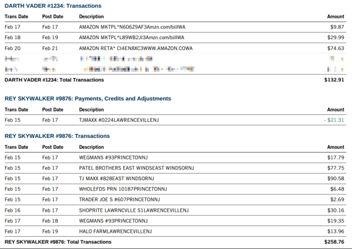
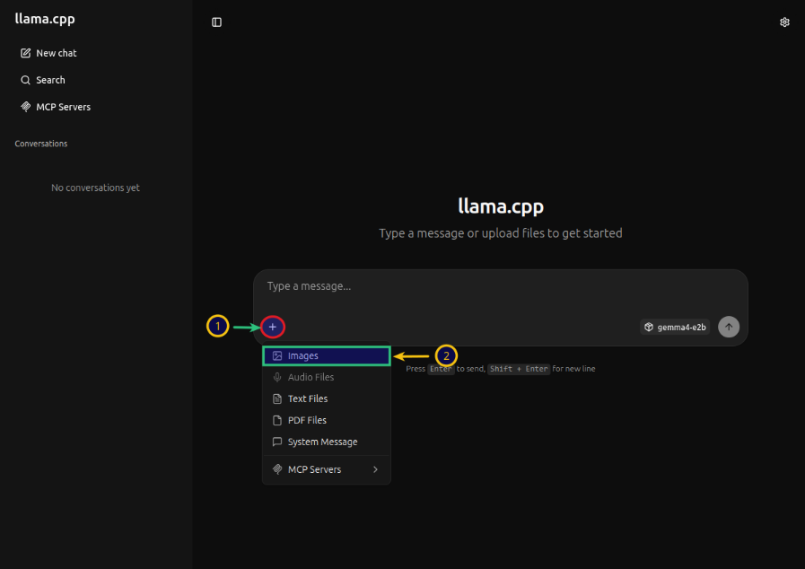
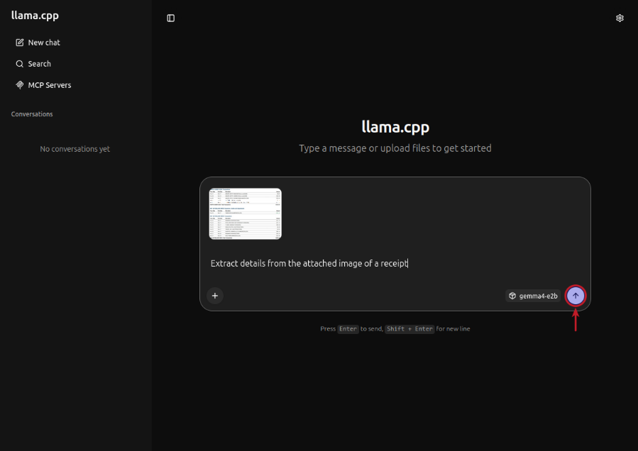
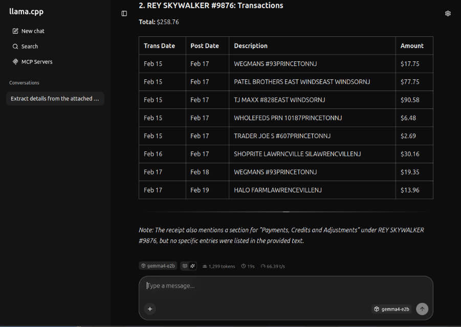

| PolarSPARC |
Quick Primer on Llama.cpp
| Bhaskar S | *UPDATED*04/11/2026 |
Overview
llama.cpp is a powerful and efficient open source inference platform that enables one to run various Large Language Models (or LLM(s) for short) on a local machine.
The llama.cpp platform comes with a built-in Web UI interface that allows one to interact with the local LLM(s) via the provided web user interface. In addition, the platform exposes a local API endpoint, which enables app developers to build AI applications/workflows to interact with the local LLM(s) via the exposed API endpoint.
Last but not the least, the llama.cpp platform efficiently leverages the underlying system resouces of the local machine, such as the CPU(s) and the GPU(s), to optimally run the LLMs for better performance.
In this primer, we will demonstrate how one can effectively setup and run the llama.cpp platform using a Docker image.
Installation and Setup
The installation and setup will can on a Ubuntu 24.04 LTS based Linux desktop. Ensure that Docker is installed and setup on the desktop (see INSTRUCTIONS). Also, ensure the Python 3.1x programming language is installed and setup on the desktop.
We will create the required models directory by executing the following command in a terminal window:
$ mkdir -p $HOME/.llama_cpp/models
From the llama.cpp docker RESPOSITORY, one can identify the current version of the docker image. At the time of this article, the latest version of the docker image ended with the version b8757.
We require the docker image with the tag word full. If the desktop has an Nvidia GPU, one can look for the docker image with the tag words full-cuda.
To pull and download the full docker image for llama.cpp with CUDA support, execute the following command in a terminal window:
$ docker pull ghcr.io/ggml-org/llama.cpp:full-cuda-b8757
The following should be the typical output:
full-cuda-b8757: Pulling from ggml-org/llama.cpp 5a7813e071bf: Pull complete a102f36d092c: Pull complete 05ec76e31584: Pull complete 398182656c47: Pull complete 73389fbd088f: Pull complete cbb9175a9bc5: Pull complete 3d6ab8c799cd: Pull complete 7209097bfb98: Pull complete 545a3ada5b6b: Pull complete 78b86fd7e3b2: Pull complete 3e5678abc4dc: Pull complete b58e12750788: Pull complete 4f4fb700ef54: Pull complete 2d3ff4753ac0: Pull complete Digest: sha256:6c5701016f5cf509bb83fbdf20599f504bacdaea725a6565c10f9b03e3799f92 Status: Downloaded newer image for ghcr.io/ggml-org/llama.cpp:full-cuda-b8757 ghcr.io/ggml-org/llama.cpp:full-cuda-b8757
To install the necessary Python packages, execute the following command:
$ pip install dotenv langchain langchain-core langchain-openai pydantic
This completes all the system installation and setup for the llama.cpp hands-on demonstration.
Hands-on with llama.cpp
Before we get started, we need to determine all the available llama.cpp command(s). To determine the supported command(s), execute the following command:
$ docker run --rm --name llama_cpp ghcr.io/ggml-org/llama.cpp:full-cuda-b8757 --help
The following should be the typical output:
Unknown command: --help
Available commands:
--run (-r): Run a model (chat) previously converted into ggml
ex: -m /models/7B/ggml-model-q4_0.bin
--run-legacy (-l): Run a model (legacy completion) previously converted into ggml
ex: -m /models/7B/ggml-model-q4_0.bin -no-cnv -p "Building a website can be done in 10 simple steps:" -n 512
--bench (-b): Benchmark the performance of the inference for various parameters.
ex: -m model.gguf
--perplexity (-p): Measure the perplexity of a model over a given text.
ex: -m model.gguf -f file.txt
--convert (-c): Convert a llama model into ggml
ex: --outtype f16 "/models/7B/"
--quantize (-q): Optimize with quantization process ggml
ex: "/models/7B/ggml-model-f16.bin" "/models/7B/ggml-model-q4_0.bin" 2
--all-in-one (-a): Execute --convert & --quantize
ex: "/models/" 7B
--server (-s): Run a model on the server
ex: -m /models/7B/ggml-model-q4_0.bin -c 2048 -ngl 43 -mg 1 --port 8080
We want to leverage llama.cpp to serve an LLM model for inference, so we will use the --server command.
To determine all the options for the --server command, execute the following command:
$ docker run --rm --name llama_cpp ghcr.io/ggml-org/llama.cpp:full-cuda-b8757 --server --help
The output will be very long so will NOT show it here.
The next step is to identify the Nvidia GPU device(s) on the desktop. To identify the CUDA device(s), execute the following command:
$ docker run --rm --name llama_cpp --gpus all ghcr.io/ggml-org/llama.cpp:full-cuda-b8757 --server --list-devices
The following should be the typical output:
ggml_cuda_init: found 1 CUDA devices (Total VRAM: 15944 MiB): Device 0: NVIDIA GeForce RTX 4060 Ti, compute capability 8.9, VMM: yes, VRAM: 15944 MiB load_backend: loaded CUDA backend from /app/libggml-cuda.so load_backend: loaded CPU backend from /app/libggml-cpu-haswell.so Available devices: CUDA0: NVIDIA GeForce RTX 4060 Ti (15944 MiB, 14143 MiB free)
From the Output.3 above, the CUDA device is CUDA0.
The following table summarizes the commonly used options with the --server command:
| Option | Description |
|---|---|
| --model | Specifies the path to the LLM model GGUF file being served |
| --n-gpu-layers | Sets the number of layers to offload to the GPU VRAM. If not set (or set to 0), the model runs on the CPU |
| --device | Specifies the backend device to use |
| --predict | The maximum number of tokens to generate. The default is -1 which indicates infinite generation |
| --seed | Controls the random seed. Default = -1 |
| --temperature | Controls the creativity and randomness of the output. Lower values indicate more deterministic output |
| --top-k | Sets sampling where the output is reduced to top K most likely tokens. Default = 40, 0 = Disabled |
| --top-p | Sets sampling where only tokens whose cumulative probability exceeds the specified threshold. Default: 0.95, 1.0 = disabled |
| --ctx-size | Sets the number of tokens that the model can remember at any time during output text generation |
| --flash-attn | Enables flash attention for faster inference. The default value is 'auto' |
| --kv-offload | Enables the Key-Value (KV) cache to be offloaded to the GPU or the CPU. If the option n-gpu-layers > 0 then offload to GPU |
| --alias | Specifies the model name that can be used in the APIs. Default is the model name |
| --host | Indicates the host to use for the server |
| --port | Indicates the port to use for the server |
| --threads | Indicates the number of CPU threads to use during generation. Default is all CPU threads |
| --log-timestamps | Enable timestamps in log messages |
For the hands-on demostration, we will download and use the Google open-weights multi-model from Huggingface - the Gemma 4 2B LLM model.
To download the Gemma 4 2B (8-bit quantized) LLM model from Hugging Face repo ggml-org/gemma-4-E2B-it-GGUF:Q8_0 and serve the LLM model, execute the following command in the terminal window:.
$ docker run --rm --name llama_cpp --gpus all --network host -v $HOME/.llama_cpp:/root/.cache ghcr.io/ggml-org/llama.cpp:full-cuda-b8757 --server --hf-repo ggml-org/gemma-4-E2B-it-GGUF:Q8_0 --alias gemma4-e2b --host 192.168.1.25 --port 8000 --device CUDA0 --temp 1.0 --top_k 64 --top_p 0.95
The following should be the typical trimmed output:
ggml_cuda_init: found 1 CUDA devices (Total VRAM: 15944 MiB): Device 0: NVIDIA GeForce RTX 4060 Ti, compute capability 8.9, VMM: yes, VRAM: 15944 MiB load_backend: loaded CUDA backend from /app/libggml-cuda.so load_backend: loaded CPU backend from /app/libggml-cpu-haswell.so common_download_file_single_online: HEAD failed, status: 404 no remote preset found, skipping main: n_parallel is set to auto, using n_parallel = 4 and kv_unified = true build_info: b8757-a29e4c0b7 system_info: n_threads = 8 (n_threads_batch = 8) / 16 | CUDA : ARCHS = 500,610,700,750,800,860,890,1200 | USE_GRAPHS = 1 | PEER_MAX_BATCH_SIZE = 128 | CPU : SSE3 = 1 | SSSE3 = 1 | AVX = 1 | AVX2 = 1 | F16C = 1 | FMA = 1 | BMI2 = 1 | LLAMAFILE = 1 | OPENMP = 1 | REPACK = 1 | Running without SSL init: using 15 threads for HTTP server start: binding port with default address family main: loading model srv load_model: loading model '/root/.cache/huggingface/hub/models--ggml-org--gemma-4-E2B-it-GGUF/snapshots/0bbd0da932e70f8b0efbcaca5c9af25233bbc8a0/gemma-4-e2b-it-Q8_0.gguf' ...[ TRIM ]... main: model loaded main: server is listening on http://192.168.1.25:8000 main: starting the main loop... srv update_slots: all slots are idle
Now, launch the Web Browser and open the URL http://192.168.1.25:8000. The following illustration depicts the llama.cpp user interface:

Enter the user prompt in the text box at the bottom and click on the circled UP arrow (indicated by the red arrow) as shown in the illustration below:

The response from the LLM is as shown in the illustration below:

Next, enter the user prompt (for solving a logical puzzle) in the text box at the bottom and click on the circled UP arrow (indicated by the red arrow) as shown in the illustration below:

The response from the LLM is as shown in the illustration below:

For the next task, we will use a test receipt image as shown in the illustration below:

First click on the plus icon (number 1 arrow) and then click on the images menu item (number 2 arrow) to attach the above test receipt image as shown in the illustration below:

After attaching the test receipt image, enter the user prompt in the text box at the bottom and click on the circled item (indicated by the red arrow) as shown in the illustration below:

The response from the LLM after processing the test receipt image is as shown in the illustration below:

Next, to test the llama.cpp inference platform via the API endpoint, execute the following user prompt in the terminal window:
$ curl -s -X POST "http://192.168.1.25:8000/completion" -H "Content-Type: application/json" -d '{"prompt": "Describe an ESP32 microcontroller in less than 100 words", "max_tokens": 150}' | jq
The following should be the typical output:
{
"index": 0,
"content": ":\n\nThe ESP32 is a powerful, low-cost System-on-a-Chip (SoC) from Espressif Systems. It features integrated Wi-Fi and Bluetooth, making it ideal for IoT projects. It boasts dual-core processing power and ample GPIO pins for diverse hardware interfacing. It is widely used for smart home devices, wearables, and connected sensors due to its excellent performance and connectivity features.",
"tokens": [],
"id_slot": 2,
"stop": true,
"model": "gemma4-e2b",
"tokens_predicted": 86,
"tokens_evaluated": 15,
"generation_settings": {
"seed": 4294967295,
"temperature": 1.0,
"dynatemp_range": 0.0,
"dynatemp_exponent": 1.0,
"top_k": 64,
"top_p": 0.949999988079071,
"min_p": 0.05000000074505806,
"top_n_sigma": -1.0,
"xtc_probability": 0.0,
"xtc_threshold": 0.10000000149011612,
"typical_p": 1.0,
"repeat_last_n": 64,
"repeat_penalty": 1.0,
"presence_penalty": 0.0,
"frequency_penalty": 0.0,
"dry_multiplier": 0.0,
"dry_base": 1.75,
"dry_allowed_length": 2,
"dry_penalty_last_n": 131072,
"dry_sequence_breakers": [
"\n",
":",
"\"",
"*"
],
"mirostat": 0,
"mirostat_tau": 5.0,
"mirostat_eta": 0.10000000149011612,
"stop": [],
"max_tokens": 150,
"n_predict": 150,
"n_keep": 0,
"n_discard": 0,
"ignore_eos": false,
"stream": false,
"logit_bias": [],
"n_probs": 0,
"min_keep": 0,
"grammar": "",
"grammar_lazy": false,
"grammar_triggers": [],
"preserved_tokens": [],
"chat_format": "Content-only",
"reasoning_format": "deepseek",
"reasoning_in_content": false,
"generation_prompt": "",
"samplers": [
"penalties",
"dry",
"top_n_sigma",
"top_k",
"typ_p",
"top_p",
"min_p",
"xtc",
"temperature"
],
"speculative.n_max": 16,
"speculative.n_min": 0,
"speculative.p_min": 0.75,
"speculative.type": "none",
"speculative.ngram_size_n": 1024,
"speculative.ngram_size_m": 1024,
"speculative.ngram_m_hits": 1024,
"timings_per_token": false,
"post_sampling_probs": false,
"backend_sampling": false,
"lora": []
},
"prompt": "<bos>Describe an ESP32 microcontroller in less than 100 words",
"has_new_line": true,
"truncated": false,
"stop_type": "eos",
"stopping_word": "",
"tokens_cached": 100,
"timings": {
"cache_n": 0,
"prompt_n": 15,
"prompt_ms": 29.787,
"prompt_per_token_ms": 1.9858,
"prompt_per_second": 503.57538523516973,
"predicted_n": 86,
"predicted_ms": 995.559,
"predicted_per_token_ms": 11.576267441860464,
"predicted_per_second": 86.38362969949547
}
}
We have successfully tested the exposed local API endpoint from the command-line !
Now, we will test llama.cpp using the Python Langchain API code snippets.
Create a file called .env with the following environment variables defined:
LLM_TEMPERATURE=1.0 LLM_TOP_P=0.95 LLM_TOP_K=64 LLAMA_CPP_BASE_URL='http://192.168.1.25:8000/v1' LLAMA_CPP_MODEL='gemma4-e4b' LLAMA_CPP_API_KEY='llama_cpp'
To load the environment variables and assign them to corresponding Python variables, execute the following code snippet:
from dotenv import load_dotenv, find_dotenv
import os
load_dotenv(find_dotenv())
llm_temperature = float(os.getenv('LLM_TEMPERATURE'))
llm_top_p = float(os.getenv('LLM_TOP_P'))
llm_top_k = float(os.getenv('LLM_TOP_K'))
llama_cpp_base_url = os.getenv('LLAMA_CPP_BASE_URL')
llama_cpp_model = os.getenv('LLAMA_CPP_MODEL')
llama_cpp_api_key = os.getenv('LLAMA_CPP_API_KEY')
To initialize an instance of the LLM client class for OpenAI running on the host URL, execute the following code snippet:
from langchain_openai import ChatOpenAI
llm_openai = ChatOpenAI(
model=llama_cpp_model,
base_url=llama_cpp_base_url,
api_key=llama_cpp_api_key,
temperature=llm_temperature,
top_p=llm_top_p,
extra_body={'top_k': llm_top_k},
)
To get a text response for a user prompt from the Gemma 4 2B LLM model running on the llama.cpp inference platform, execute the following code snippet:
response = llm_openai.invoke([
{'role': 'system', 'content': 'You are a helpful assistant.'},
{'role': 'user', 'content': 'Compare the GDP of India vs USA in 2024 and provide the response in JSON format'}
])
response.content
The following should be the typical output:
'```json\n{\n "comparison_title": "Estimated GDP Comparison: India vs. USA (2024)",\n "data_source_note": "The figures provided below are estimates and projections based on forecasts from international organizations (such as the IMF, World Bank) as of late 2023/early 2024. Actual final figures for 2024 will vary.",\n "countries": [\n {\n "country": "India",\n "gdp_estimate_usd_trillions": 3.75,\n "growth_projection_percentage": "6.5% - 7.0%",\n "notes": "India is projected to be one of the fastest-growing major economies, driven by domestic consumption and infrastructure spending."\n },\n {\n "country": "USA",\n "gdp_estimate_usd_trillions": 27.0,\n "growth_projection_percentage": "1.5% - 2.0%",\n "notes": "The USA maintains a significantly larger economy, though growth is projected to be more moderate compared to India."\n }\n ],\n "summary": {\n "scale_difference": "The USA\'s GDP is significantly larger in absolute terms.",\n "growth_dynamics": "India is expected to demonstrate a higher rate of economic growth than the USA in 2024, reflecting its demographic dividend and strong domestic market."\n }\n}\n```'
For the next task, we will attempt to present the LLM model response in a structured form using a Pydantic data class. For that, we will first define a class object by executing the following code snippet:
from pydantic import BaseModel, Field class GeographicInfo(BaseModel): country: str = Field(description="Name of the Country") capital: str = Field(description="Name of the Capital City") population: int = Field(description="Population of the country in billions") land_area: int = Field(description="Land Area of the country in square miles") list_of_rivers: list = Field(description="List of top 5 rivers in the country")
To receive a LLM model response in the desired format for the specific user prompt from the llama.cpp platform, execute the following code snippet:
response = struct_llm_openai.invoke([
{'role': 'system', 'content': 'You are a helpful assistant.'},
{'role': 'user', 'content': 'Provide the geographic information of India and include the capital city, population in billions, land area in square miles, and list of rivers'}
])
response
The following should be the typical output:
GeographicInfo(country='India', capital='New Delhi', population=1440, land_area=3, list_of_rivers=[{'name': 'Ganges (Ganga)', 'description': 'The most sacred river in Hinduism, originating in the Himalayas.'}, {'name': 'Indus', 'description': 'A major river system flowing through northern India and Pakistan.'}, {'name': 'Brahmaputra', 'description': 'A major river system flowing through Northeast India and Bangladesh.'}, {'name': 'Godavari', 'description': 'The second-largest river in India and one of the largest in the world.'}, {'name': 'Krishna', 'description': 'A major peninsular river system flowing through Southern India.'}, {'name': 'Yamuna', 'description': 'A major river in the Indo-Gangetic plain.'}])
For the next task, we will attempt to present the LLM model with the test receipt image for information extraction. For that, we will first read the image bytes by executing the following code snippet:
import base64
image_path = './data/test-receipt.jpg'
with open(image_path, 'rb') as image_file:
image_data = base64.b64encode(image_file.read()).decode('utf-8')
To receive a LLM model response for the image processing user prompt from the llama.cpp platform, execute the following code snippet:
response = llm_openai.invoke([
{'role': 'system', 'content': 'You are a helpful image processing assistant.'},
{'role': 'user', 'content': [{'type': 'image_url', 'image_url': {'url': f'data:image/jpeg;base64,{image_data}'}}]}
])
response.content
The following should be the typical output:
'This image appears to be a financial ledger or transaction report, broken down into three main sections, likely tracking transactions related to "DARTH VADER" and "REY SKYWALKER."\n\nHere is a breakdown of the data presented:\n\n---\n\n### 1. DARTH VADER #1234: Transactions\n\nThis section lists several transactions with associated dates and amounts.\n* **Total for this section:** **$132.91**\n\n### 2. REY SKYWALKER #9876: Payments, Credits and Adjustments\n\nThis section details payments, credits, and adjustments related to Rey Skywalker.\n* **Total for this section:** **$21.31**\n\n### 3. REY SKYWALKER #9876: Transactions\n\nThis section lists the main transactions for Rey Skywalker.\n* **Total for this section:** **$258.76**\n\n---\n\n**In summary:** The report tracks three distinct financial activities, totaling **$412.98** across the three sections shown.'
With this, we conclude the various demonstrations on using the llama.cpp platform for running and working with the pre-trained LLM model locally !!!
References